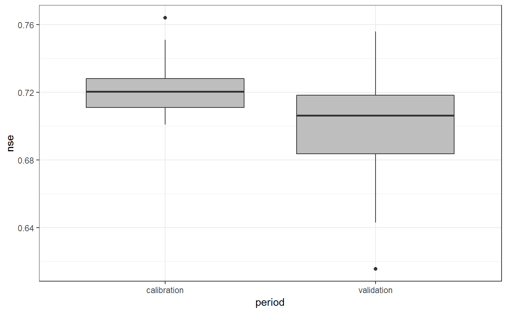
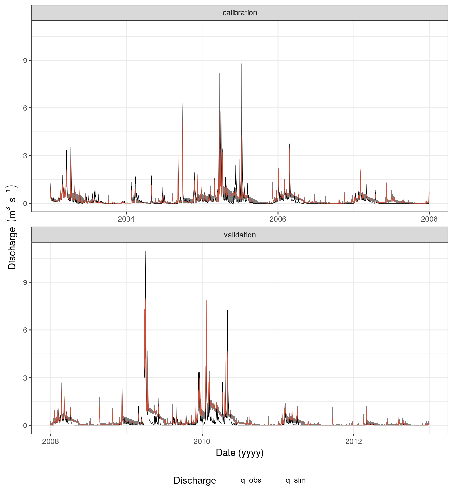

02 - Parameter sampling and model calibration
Source:vignettes/02_par_sampl_calib.Rmd
02_par_sampl_calib.RmdR packages
A common procedure in hydrological modeling is to draw random samples for a set of parameters, to execute the model with all drawn parameter combinations, evaluate the simulations based on one or several criteria, and select parameter sets that were able to reproduce the observation date sufficiently with the applied model setup. For R different routines are available to draw random samples. The simplest approach might be to use the function runif() from the base R package stats (R Core Team, 2019) to draw uniform samples for each parameter. You can draw Latin Hypercube Samples [LHS] with the package lhs (Carnell, 2019). Other ‘pseudo’ and ‘quasi’ random numbers (that can be relevant for some methods for sensitivity analysis) can be drawn using the package randtoolbox (Dutang C. and P., 2018). In this example we will implement LHS sampling. To evaluate simulated time series of hydrological variables, multiple goodness-of-fit functions are available from literature. The hydroGOF package (Mauricio Zambrano-Bigiarini, 2017) summarizes frequently used functions for the evaluation of time series of hydrological variables.
Package installation
If you do not have installed any of the required R package, follow the instructions for the respective R package. All of the required R packages are available from CRAN and can be installed with the following commands:
install.packages("lhs")
install.packages("hydroGOF")
install.packages("dplyr")
install.packages("lubridate")
install.packages("tibble")
install.packages("tidyr")
install.packages("purrr")
install.packages("ggplot2")Loading demo data
The optimization example uses the SWAT+ demo project available from SWATplusR. The demo project is a very simple model setups of a head watershed of the Little River Experimental Watershed (LREW; Bosch et al., 2007). You can load the to your hard drive as follows:
# The path where the SWAT demo project will be written
demo_path <- "Define:/your/path"
# Loading the SWAT+ demo project on your hard drive
path_plus <- load_demo(dataset = "project",
version = "plus",
path = demo_path,
revision = 57)SWATplusR also provides observation data of daily discharge records at the main outlet of the demo for the time period 1968-01-01 until 2012-12-31. We will use the observation data to evaluate the model in each optimization step. For this example we define calibration and validation periods for our data set, where the calibration period is from 2003-01-01 to 2007-12-31 and the validation period ranges between 2008-01-01 and 2012-12-31. Therefore, we load the demo data and limit it to these time periods:
Parameter sampling
For the sampling example we will use 7 SWAT model parameters that are frequently calibrated for discharge. Below we create a tibble (Müller and Wickham, 2019) that provides the parameter boundaries for the 7 parameters. We name the parameters using the specific syntax that is requested by the run_swat*() functions (see the Get started section on ‘Model parameter alteration’ to learn more on parameter names):
par_bound <- tibble("cn2.hru | change = abschg" = c(-15, 10),
"lat_ttime.hru | change = absval" = c(0.5, 50),
"lat_len.hru | change = absval" = c(10, 100),
"k.sol | change = pctchg" = c(-50, 50),
"z.sol | change = pctchg" = c(-50, 50),
"esco.hru | change = absval" = c(0, 1),
"epco.hru | change = absval" = c(0, 1))
Random sampling with runif()
The most basic way to draw random parameter samples is to use the base R function runif(). With runif() you can create a uniformly distributed vector. To draw a specific number of parameter sets with runif() you have to create a vector with that number of random values for each parameter and transform them to their parameter ranges. Below you find a very efficient approach to create a table of parameter combinations using a map*() function from the functional programing package purrr:
n_sample <- 250
par_runif <- map_df(par_bound, ~ runif(n_sample, .x[1], .x[2]))
par_runif
#> # A tibble: 250 x 7
#> `cn2.hru | chan… `lat_ttime.hru … `lat_len.hru | … `k.sol | change…
#> <dbl> <dbl> <dbl> <dbl>
#> 1 -0.982 0.828 46.7 1.33
#> 2 -5.45 6.95 51.4 -14.8
#> 3 -7.30 14.8 86.0 -23.4
#> 4 1.95 7.21 12.4 -15.6
#> 5 -2.82 13.0 36.6 47.0
#> 6 -14.7 5.72 83.5 -41.2
#> 7 -5.75 41.4 13.4 -25.4
#> 8 -13.0 46.7 19.8 -31.3
#> 9 -13.9 23.1 62.6 -44.3
#> 10 0.174 33.3 29.8 -35.1
#> # … with 240 more rows, and 3 more variables: `z.sol | change =
#> # pctchg` <dbl>, `esco.hru | change = absval` <dbl>, `epco.hru | change
#> # = absval` <dbl>
Random sampling with lhs
In a very similar way you can draw LHS samples using the function randomLHS() from the lhs package. Below you find an efficient example to draw a n_sample = 250 LHS sampled parameter combinations:
n_sample <- 250
n_par <- ncol(par_bound)
par_iter1 <- randomLHS(n = n_sample, k = n_par) %>%
as_tibble(., .name_repair = "minimal") %>%
map2_df(., par_bound, ~ (.x * (.y[2] - .y[1]) + .y[1])) %>%
set_names(names(par_bound))par_iter1
#> # A tibble: 250 x 7
#> `cn2.hru | chan… `lat_ttime.hru … `lat_len.hru | … `k.sol | change…
#> <dbl> <dbl> <dbl> <dbl>
#> 1 0.423 49.5 48.4 -45.6
#> 2 7.21 37.4 78.4 -44.8
#> 3 9.11 38.9 90.3 46.0
#> 4 0.582 21.6 86.8 0.268
#> 5 -9.75 3.84 84.8 -11.7
#> 6 -4.20 28.7 80.3 19.4
#> 7 9.45 17.7 62.5 -23.9
#> 8 -8.93 21.8 74.3 -20.1
#> 9 7.95 2.29 86.5 -2.96
#> 10 -9.43 27.3 20.1 -42.6
#> # … with 240 more rows, and 3 more variables: `z.sol | change =
#> # pctchg` <dbl>, `esco.hru | change = absval` <dbl>, `epco.hru | change
#> # = absval` <dbl>Model calibration
Simulation runs
In a next step we implement all LHS sampled parameter combinations in the SWAT+ demo setup and simulate daily discharges for the calibration period 2003-01-01 until 2007-12-31 (with a warm-up period of 3 years fro 2000 to 2002). To perform the simulations we pass the entire tibble with the parameter combinations with the argument parameter in the function run_swatplus().
q_cal1 <- run_swatplus(project_path = path_plus,
output = list(q_sim = define_output(file = "channel",
variable = "flo_out",
unit = 1)),
parameter = par_iter1,
start_date = "2000-01-01",
end_date = "2007-12-31",
years_skip = 3,
n_thread = 4)
#> Building 4 threads in 'Define:/your/path/swatplus_demo/.model_run':
#> Completed 4 threads in 0S
#> Performing 250 simulations on 4 cores:
#> Completed 250 simulations in 1M 54SModel evaluation
We use the Nash Sutcliffe Efficiency criterion (NSE; Nash and Sutcliffe, 1970) to evaluate the simulations for the calibration period. The NSE is implemented in hydroGOF with the function NSE():
nse_cal1 <- q_cal1$simulation$q_sim %>%
select(-date) %>%
map_dbl(., ~NSE(.x/8.64, q_obs_cal$discharge))The first iteration of discharge simulations and their evaluation with the NSE should help us to identify the relevant parameter and/or constrain parameter boundaries of parameters. Therefore we display the parameter samples with the resulting NSE values in dotty plots:
dotty_cal1 <- q_cal1$parameter$values %>%
mutate(nse = nse_cal1) %>%
filter(nse > -5) %>%
gather(key = "par", value = "parameter_range", -nse)
ggplot(data = dotty_cal1) +
geom_point(aes(x = parameter_range, y = nse)) +
facet_wrap(.~par, ncol = 3, scales = "free_x") +
theme_bw()
The only parameter that showed a clear parameter front in dotty plot is the “lat_ttime”. For the next iteration we will constrain the “lat_ttime” to the interval [0.5,5].
Parameter update and re-evaluation of the model
To constrain the parameter “lat_ttime” we update the parameter boundaries table. As we only modify the boundaries of one parameter an efficient way is to do the following. In a next step we draw a new set of LHS sampled model parameter combinations and re-run the model:
par_bound$`lat_ttime.hru | change = absval` <- c(0, 5)
par_cal2 <- randomLHS(n = n_sample, k = n_par) %>%
as_tibble(.) %>%
map2_df(., par_bound, ~ (.x * (.y[2] - .y[1]) + .y[1])) %>%
set_names(names(par_bound))
q_cal2 <- run_swatplus(project_path = path_plus,
output = list(q_sim = define_output(file = "channel",
variable = "flo_out",
unit = 1)),
parameter = par_iter2,
start_date = "2000-01-01",
end_date = "2007-12-31",
years_skip = 3,
n_thread = 4)
#> Building 4 threads in 'Define:/your/path/swatplus_demo/.model_run':
#> Completed 4 threads in 0S
#> Performing 250 simulations on 4 cores:
#> Completed 250 simulations in 1M 56SThe updated simulations are again evaluated:
nse_cal2 <- q_cal2$simulation$q_sim %>%
select(-date) %>%
map_dbl(., ~NSE(.x/8.64, q_obs_cal$discharge))To get an overview of the NSE values for the best simulation runs simply run the following command:
sort(nse_cal2, decreasing = T) %>% enframe()
#> # A tibble: 250 x 2
#> name value
#> <chr> <dbl>
#> 1 run_001 0.764
#> 2 run_137 0.751
#> 3 run_024 0.746
#> 4 run_038 0.745
#> 5 run_203 0.741
#> 6 run_078 0.739
#> 7 run_124 0.737
#> 8 run_149 0.735
#> 9 run_073 0.730
#> 10 run_241 0.729
#> # … with 240 more rowsIn our example we consider all simulations that resulted in an NSE > 0.7 as acceptable simulation results. Therefore we select the acceptable simulations and their respective parameter combinations from our simulation outputs:
run_sel <- which(nse_cal2 >= 0.7)In total 44 simulations resulted in acceptable representations of the observed discharge.
Model validation
Parameter sampling and simulation
We will validate the selected 4299 parameter combinations in the validation period 2008-01-01 to 2012-12-31. Therefore, we use the indices of the acceptable simulations for the calibration period and use their parameter combinations to perform the simulations in the validation period:
q_val <- run_swatplus(project_path = path_plus,
output = list(q_sim = define_output(file = "channel",
variable = "flo_out",
unit = 1)),
parameter = q_cal2$parameter,
run_index = run_sel,
start_date = "2005-01-01",
end_date = "2012-12-31",
years_skip = 3,
n_thread = 4, keep_folder = T)
#> Building 4 threads in 'Define:/your/path/swatplus_demo/.model_run':
#> Completed 4 threads in 0S
#> Performing 44 simulations on 4 cores:
#> Completed 44 simulations in 20SEvaluation of the calibration period
The evaluation of the validation period is identical to the evaluation of the iterations of the calibration period. To get an overview of the model performance in the validation period we visualize a summary statistics:
nse_val <- q_val$simulation$q_sim %>%
select(-date) %>%
map_dbl(., ~NSE(.x/8.64, q_obs_val$discharge))
nse_comp <- tibble(run = names(nse_cal2[run_sel]),
calibration = nse_cal2[run_sel],
validation = nse_val)
nse_comp %>%
gather(key = "period", value = "nse", - run) %>%
ggplot(data = .) +
geom_boxplot(aes(x = period, y = nse), fill = "grey") +
theme_bw()
A tabular overview can show a direct comparison of the simulations in the calibration and validation period for the individual runs and their parametrizations:
nse_comp %>%
arrange(desc(calibration))
#> # A tibble: 44 x 3
#> run calibration validation
#> <chr> <dbl> <dbl>
#> 1 run_001 0.764 0.746
#> 2 run_137 0.751 0.713
#> 3 run_024 0.746 0.689
#> 4 run_038 0.745 0.707
#> 5 run_203 0.741 0.744
#> 6 run_078 0.739 0.706
#> 7 run_124 0.737 0.645
#> 8 run_149 0.735 0.724
#> 9 run_073 0.730 0.699
#> 10 run_241 0.729 0.698
#> # … with 34 more rowsVisualization of discharge simulation
We will plot the ensemble of simulations as a band of minimum and maximum values for each time step and compare it to the observations.
run_best <- nse_comp$run[1]
get_run_stat <- function(run_table, best_run) {
run_table %>%
select(-date) %>%
mutate(q_max = pmap_dbl(., max),
q_min = pmap_dbl(., min)) %>%
select(matches(best_run), q_min, q_max) %>%
set_names(c("q_sim", "q_min", "q_max")) %>%
add_column(date = run_table$date, .before = 1)
}
cal_stat <- q_cal2$simulation$q_sim %>%
select(!!names(q_val$simulation$q_sim)) %>%
get_run_stat(., run_best) %>%
mutate_if(., is.numeric, ~ (./8.64)) %>%
mutate(period = "calibration")
val_stat <- q_val$simulation$q_sim %>%
get_run_stat(., run_best) %>%
mutate_if(., is.numeric, ~ (./8.64)) %>%
mutate(period = "validation")
sim_stat <- bind_rows(cal_stat, val_stat) %>%
left_join(., q_obs, by = "date") %>%
rename( q_obs = discharge) %>%
gather(key = "variable", value = "q", -date, -q_min, - q_max, -period)
ggplot(data = sim_stat) +
geom_ribbon(aes(x = date, ymin = q_min, ymax = q_max), fill = "grey50") +
geom_line(aes(x = date, y = q, col = variable), lwd = 0.25) +
scale_color_manual(values = c("black", "tomato3")) +
labs( x = "Date (yyyy)",
y = expression (Discharge~(m^3~s^{-1})),
col = "Discharge") +
facet_wrap(period~., scales = "free_x", ncol = 1) +
theme_bw() +
theme(panel.spacing = unit(0.2, "lines"),
legend.position = "bottom")
References
Bosch, D. D., Sheridan, J. M., Lowrance, R. R., Hubbard, R. K., Strickland, T. C., Feyereisen, G. W. and Sullivan, D. G.: Little river experimental watershed database, Water Resources Research, 43(9), doi:10.1029/2006wr005844, 2007.
Carnell, R.: Lhs: Latin hypercube samples. [online] Available from: https://CRAN.R-project.org/package=lhs (Accessed 5 March 2019), 2019.
Dutang C. and P., S.: Randtoolbox: Generating and testing random numbers. [online] Available from: https://CRAN.R-project.org/package=randtoolbox (Accessed 5 March 2019), 2018.
Mauricio Zambrano-Bigiarini: HydroGOF: Goodness-of-fit functions for comparison of simulated and observed hydrological time series., 2017.
Müller, K. and Wickham, H.: Tibble: Simple data frames. [online] Available from: https://CRAN.R-project.org/package=tibble (Accessed 5 March 2019), 2019.
Nash, J. E. and Sutcliffe, J. V.: River flow forecasting through conceptual models part I - A discussion of principles, Journal of Hydrology, 10(3), 282–290, doi:10.1016/0022-1694(70)90255-6, 1970.
R Core Team: R: A language and environment for statistical computing., [online] Available from: https://www.r-project.org/ (Accessed 5 March 2019), 2019.